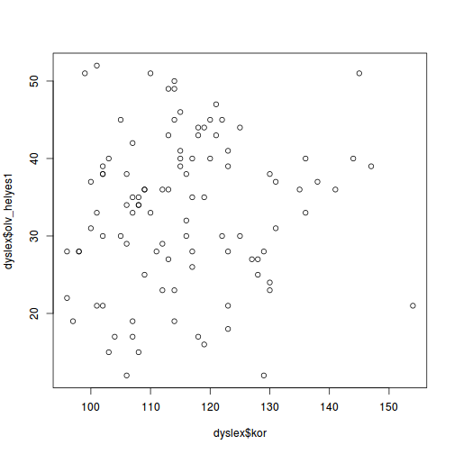
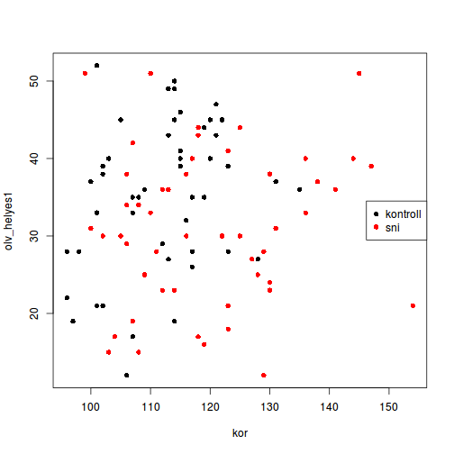
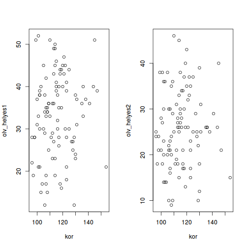
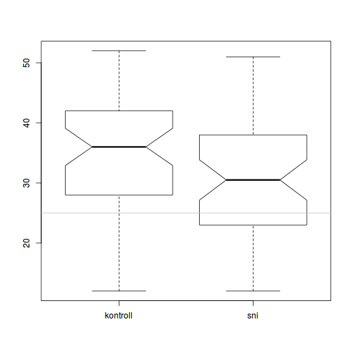
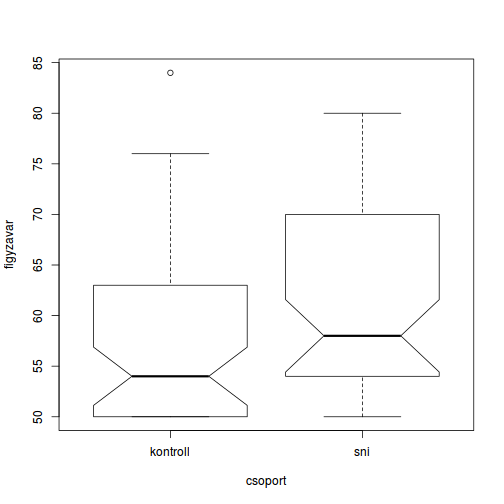
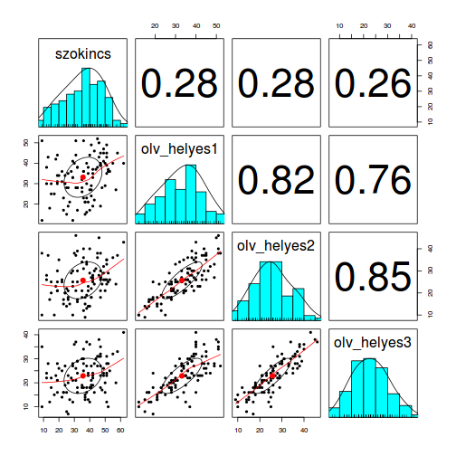

A base graphics az R legrégebbi ábrázolási rendszere. Alapvetően statikus ábrák készítésére alkalmas, és igen apró részletekig paraméterezhető.
A base graphics ábrázolási modellje a "festő modellt" (paint model) követi, azaz az ábrakészítés lépései többnyire a következők:
A base graphics fő függvénye a plot és a paraméterek beállítására szolgáló
par. A plot függvény valójában egy generikus függvény, rendkívül sok specifikus
metódussal (lásd methods(plot)). Alapesetben a plot.default metódust
hívjuk meg. Külön függvények léteznek hisztogramok (hist), boxplotok
(boxplot), oszlopdiagramok (barplot), vonalábrák (matplot), színkódolt
felület-ábrák (image) stb. megjelenítésére. Alacsonyabb szintű függvényekkel
pontokat (points), vonalakat (abline, lines, segments), alakzatokat (polygon),
szöveget (text, mtext), ábramagyarázatot (legend) stb. adhatunk az ábrához.
A következőkben bemutatunk néhány gyakran használt ábratípust. A base graphics
valamennyi ábrázoló függvényének megtekintéséhez írd be ezt a sort a
konzolba: library(help = "graphics"). Nagyon ajánlott elolvasni a hivatalos
R-es bevezető dokumentum vonatkozó részét is (lásd pl. itt).
data(dyslex)
# alap megadási mód
plot(dyslex$kor, dyslex$olv_helyes1)

# a with() függvényt használva, külön színnel jelölve a két csoportot, és
# megváltoztatva a pontok alakját
with(dyslex,
plot(kor, olv_helyes1, col = csoport, pch = 16))
# tegyünk hozzá ábramagyarázatot
legend("right", legend = levels(dyslex$csoport),
col = c("black", "red"), pch = 16)

plot függvénynél is használhatjuk a formula
interfészt; a formula általános alakja: függő változó ~ magyarázó változó# a par() függvény 'mfrow' argumentumának megadjuk, hogy 1 sorra és 2
# oszlopra ossza fel az ábrázolási területet
par(mfrow = c(1, 2))
# első mező feltöltése egy ábrával, formula-t használva
plot(olv_helyes1 ~ kor, data = dyslex)
# masodik mező feltöltése egy ábrával, formula-t használva
plot(olv_helyes2 ~ kor, data = dyslex)

A box & whisker ábra nagyon jó és robusztus módszer arra, hogy ábrázoljuk egy folytonos változó eloszlását egy csoportosító változó függvényében.
# notch-ot is tegyünk rá, lásd ?boxplot
boxplot(olv_helyes1 ~ csoport, data = dyslex, notch = TRUE)
# húzzunk egy vízszintes vonalat az olv_helyes2 mediánjának megfelelően
abline(h = median(dyslex$olv_helyes2), col = "grey")

# a plot() automatikusan a boxplot()-ot jelenti, ha az x változó faktor!
plot(figyzavar ~ csoport, data = dyslex, notch = TRUE)
with(dyslex, identify(csoport, figyzavar))

## integer(0)
dyslex[25, ]
## id nem csoport oszt kor figyzavar szokincs olv_helyes1 olv_helyes2
## 25 s25 fiu kontroll 3 114 84 42 19 25
## olv_helyes3 sp_helyes1 sp_helyes2 sp_helyes3 sp_helyes4 sp_helyes5
## 25 24 24 15 15 14 16
## olvasas helyesiras
## 25 68 84
Valójában a grafikai eszköz, amely az ábrát megjeleníti, nem csak a
képernyődön megnyíló ablak (vagy RStudio-nal a Plots window) lehet.
Szabadon megválaszthatod, hogy az ábrát milyen eszközön akarod elkészíteni,
lásd: ?device. Például készítsünk egy pdf-et a korábbi boxplot-os
ábrából:
# ha az ű és í nem jól jelenne meg, az alábbi paranccsal kiküszöbölheted
pdf.options(encoding = "CP1250")
# nyitunk egy pdf grafikai eszközt, megadjuk a fájl nevét, az ábra méretét
pdf(file = "temp.pdf", width = 7, height = 7)
# elkészítjük az ábrát
plot(figyzavar ~ csoport, data = dyslex, notch = TRUE)
# bezárjuk az eszközt
dev.off()
Ezek után a kérdéses fájl (temp.pdf) ott pihen a munkakönyvtáradban.
(Az RStudio Plots nevet viselő ablakában lehetőséged van arra, hogy az aktuális ábrát akár valamilyen bitmap, akár pdf formátumba exportáld. Ez sajnos nem mindig működik tökéletesen, illetve humán interakciót igényel, így például szkripteket futtatva nem használható.)
Nagyon valószínű, hogy valaki már megírta az a plottoló rutint, amelyet használni szeretnél, így érdemes először keresni, és csak utána feltalálni a kereket.
Sajnos egy ideje nem frissül, de ezen a linken találhatsz egy egész mutatós kollekciót R-ábrákból.
Explorációs ábrázolásokra (különösen regressziós elemzések előtt) kiválóan
alkalmas például a psych csomag pairs.panels függvénye:
library(psych)
pairs.panels(
dyslex[, c("szokincs", "olv_helyes1", "olv_helyes2", "olv_helyes3")])
